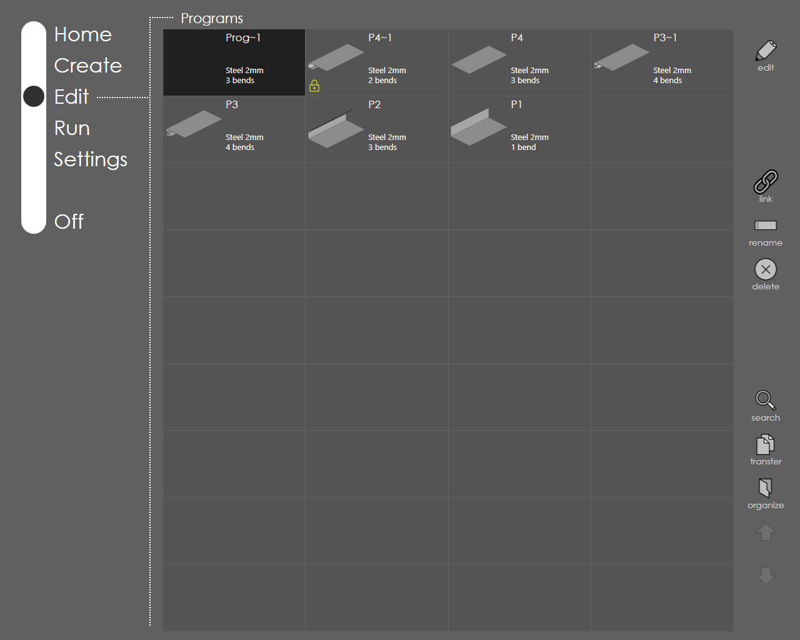
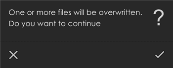
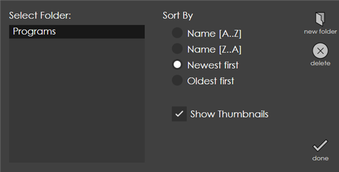

Edit
This page displays all the available programs and allows the user to pick one for editing.

Program Types
Direct programs are the programs that have been created directly on the control using the Direct Program environment. There are no 3D illustrations available for each step, nor can do any collision checks for these, except machine-against-machine. When a program is picked and open for editing, a screen very similar to the Direct program creation is presented, except that you are now editing a program that was created earlier.
3D Model programs are created either by importing from a 3D model, or by folding up a DXF, or using the profile library. These programs have an accompanying 3D model which can be used to set up back-gauges, or to modify the sequence. When these programs are run, step-by-step 3D illustrations are displayed showing the bending steps that are in progress.
Edit Commands
edit:
Select (touch) the program to be edited and then press this button. This brings the Edit Model page where necessary changes to the program can be made.
link:
Select (touch) the program to be linked and the press this button. Select the other program which is to be linked to this program and then press done to link. Press cancel to abort linking. Press link button for already linked program to unlink it. See Link Programs for details.
rename:
This command allows user to change the name of the selected program. Just type-in the new name in the dialog that comes up.
delete:
Use this switch to delete the selected program.
transfer:
This command allows user to perform operations like converting 3d program to direct program, cloning, exporting and importing files. This command supports the selection multiple programs. You can select or de-select a program by touching it. The options provided by the transfer command include:
Save direct command allows the user to convert 3d program to direct program. 3d program should have only one setup. Also, in a single setup, it is not possible to use multiple punch or die.
Clone command allows user to make an exact copy of the program(s) selected. Select one or more programs and then press this button to create a copy of the selected program(s). When more than one program is cloned, you get a Clone files dialog which asks whether you want to clone the selected number of files. Once the OK mark is pressed, the files are cloned. Generally, the name of the cloned file will have a number after the part name separated by a hyphen (e.g.in case, you clone a part named P5 then the name of the cloned part will be P5-1. If the name P5-1 already exists, the number will be incremented by one i.e. P5-2).
Save flat command is used to save the selected program as a flat, i.e. the shape of the part before bending. Pressing this button brings up the Select location to save flat dialog, where one can choose the folder location to save the flat part.
Lock
| Users can access this menu only if they have Admin or Service level user access. |
When a program is locked by the user, the program cannot be edited. Only corrections can be added to this program.
To lock a program from edit page, select the program and click the transfer icon and select lock.
To unlock the program click again on the transfer icon and select unlock.
Export command brings up the Export File dialog through which you pick the location to export the selected file(s).
Import command brings up the Import Files dialog using which one or more 3D program or Direct program files can be selected for import. Once the files are selected press mark in the dialog to import the file(s). If the name of the file(s) you try to import already exists, a warning message is displayed as seen in the picture below asking whether to replace the existing file(s).

Press to exit from the transfer command.
organize:
Use this command to customize the view of the Edit page. A dialog as shown in the picture below comes up when you press this button.

The edit page displays all the programs from the Programs folder. One can create folders and structure data within this folder. Create new folders using the new folder command. This will create a new folder within the Programs folder.
On the left, there is Select Folder section which shows the directory structure. choosing a folder from the tree and displays the contents of the selected folder in the edit page. It is possible to sort the files in the folder by using the options provided under the Sort By section. To sort by name in ascending order choose Name [A… Z] and to sort by name in descending order choose Name [Z… A].
Newest first shows all the programs that were created recently and Oldest first displays the programs sorted in the ascending order of the created date.
Using the Show Thumbnails, the thumbnail display can be turned on or off for the programs in the edit page. Use the delete button to remove a sub-directory. Note that only a sub-directory that is empty can be deleted. Press done to apply the changes and exit.